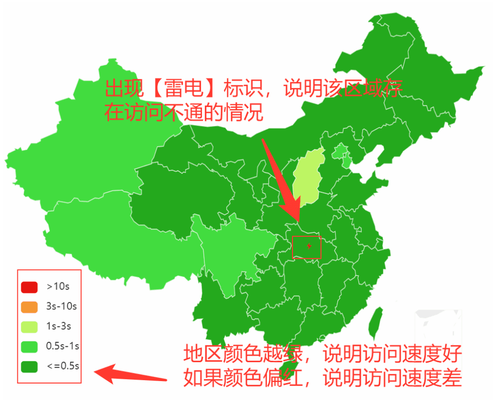
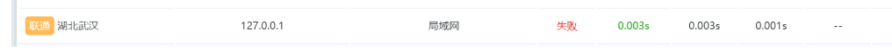
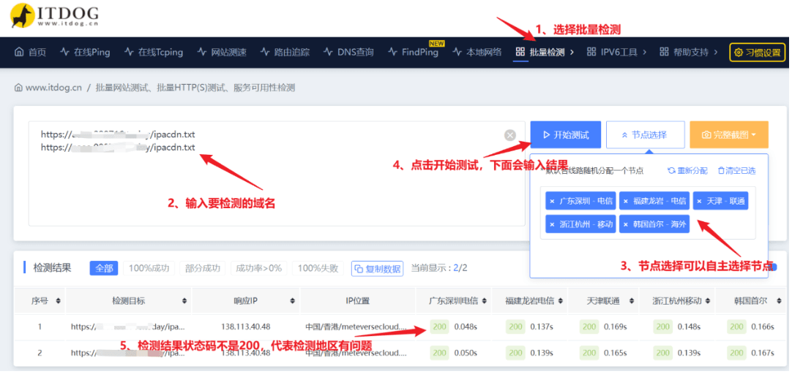
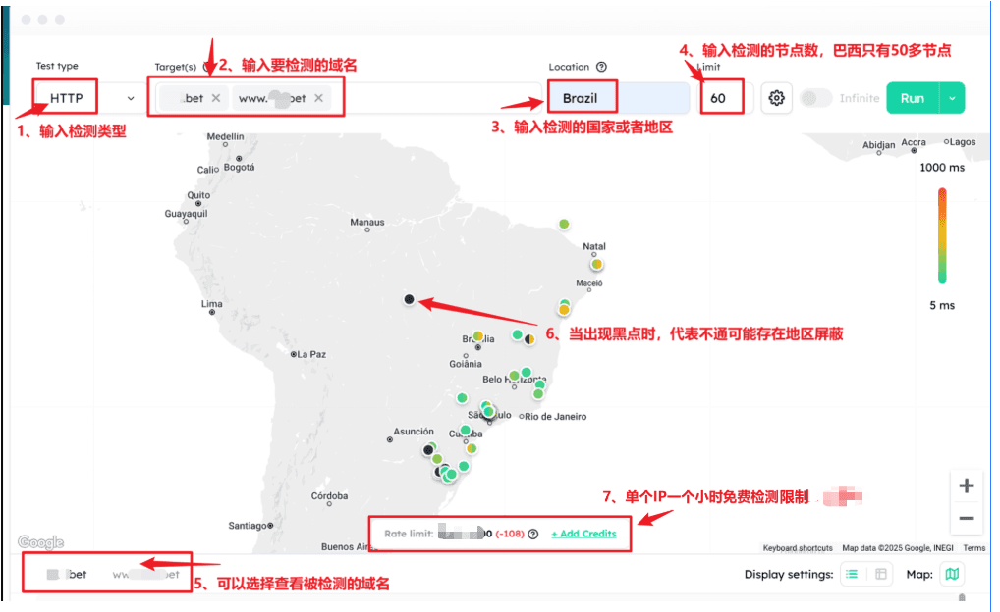
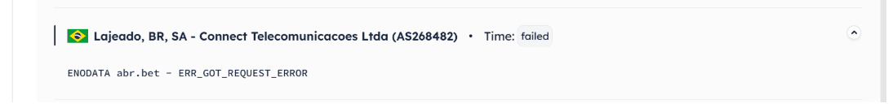

亚太中国地区检测方法
一、检测路径
根据域名类型，需要添加不同后缀，否则可能出现 403 或 404 错误。以下为不同类型域名的检测路径示例：
WEB大厅域名: https://xxx/
下载站域名: https://xxx/
APP热更域名: https://xxx/health-check
后端加速域名: https://xxx/ipacdn.txt
OSS加速域名: https://xxx/siteadmin/ssocdn.txt说明：将 xxx 替换为具体的域名。
二、检测网址： https://boce.aliyun.com https://www.17ce.com https://www.boce.com https://www.itdog.cn/batch_http/ 其他拨测平台
三、检测步骤
- 打开检测网站 https://boce.aliyun.com https://www.17ce.com https://www.boce.com https://www.itdog.cn/batch_http/ 其他拨测平台。
- 按照以下操作示例进行检测：
四、检测结果说明
业主只需关注以下两项关键指标：1. 速度 和 2. 屏蔽。
1. 速度
① 定义: 综合反映 DNS 解析时间、首包时间、下载时间等性能指标。
② 判断: 检测结果地区颜色越绿，访问速度越快；颜色偏红，则访问速度较慢。
③ 处理: 若【速度】异常，可提交技术支持排查具体原因。
2. 屏蔽
① 定义: 显示地区是否存在屏蔽情况。
② 标识: 若某地区显示【雷电⚡】图标，说明可能存在屏蔽。
③ 示例: 如下图，湖北联通因 DNS 污染被屏蔽，解析地址被指向127.0.0.1

演示域名湖北联通被屏蔽，具体手段是dns污染，把域名解析至127.0.0.1。

五、问题处理
1. 访问速度问题
① 现象: 拨测结果中大范围地区显示为 橙色 或 红色。
② 原因: CDN 节点与国内网络的连接质量较差，可能受限于线路拥堵或服务器资源不足。
③ 解决方案: 联系 CDN 服务提供商，要求优化特定地区的线路。
2. 地区屏蔽问题
① 现象: 某些地区显示屏蔽标志【雷电⚡】。
② 原因: 域名可能因 DNS 污染或其他手段被屏蔽。
③ 解决方案:已被屏蔽的域名通常无法解封，建议直接更换域名；更换后，请参考域名管理教程，加强防御措施，避免再次被屏蔽。
六、批量检测
批量检测与单域名检测的原理一致，只是一次性测试多个域名，适合需要同时检测多组域名的情况。
执行步骤
- 访问检测网站 https://boce.aliyun.com https://www.17ce.com https://www.boce.com https://www.itdog.cn/batch_http/ 其他拨测平台。
- 输入多组待检测域名。
- 按照页面提示进行批量检测。

亚太非中国地区检测方法
一、globalping 网站
https://globalping.io/?measurement=rOGctMPcPDpb8lDu
常见地区： 巴西：Brazil 印度：India 越南：Vietnam
二、GlobalPing 检测介绍
结合图示，按照以下步骤进行检测：
-
检测类型
在页面左上角的 Test Type 下拉菜单中，选择检测类型为 HTTP（如图中标记为①）。 -
输入被检测的域名
在 Target(s) 输入框中，填入需要检测的域名。支持输入多个域名进行同时检测，不能有空格和特殊符号（如图中标记为②）。 -
选择检测地区
在 Location 输入框中，选择检测区域，此处需确保选择的是具体国家或地区（如图中标记为③）。 -
输入检测节点数量
在 Limit 输入框中输入检测节点的数量。巴西的检测节点数量有限，约为 50 个（如图中标记为④）。（节点数量过多可能会影响检测速度，请根据需求合理设置。） -
查看被检测的域名结果
如果同时输入了多个域名，可以在下方结果框中切换查看各个域名的检测结果（如图中标记为⑤）。 -
检查黑点标识
检测结果中，地图上的 黑点 表示检测节点无法连接，可能存在网络屏蔽问题（如图中标记为⑥）。

三、检测结果说明
业主只需关注以下两项关键指标：1. 速度 和 2. 屏蔽。
1. 速度
① 定义: 综合反映 DNS 解析时间、首包时间、下载时间等性能指标。
② 判断: 检测结果地区颜色越绿，访问速度越快；颜色偏红，则访问速度较慢。
③ 处理: 若【速度】异常，可提交技术支持排查具体原因。
2. 屏蔽
① 定义：显示地区是否存在屏蔽情况
② 标识：检测结果中，若某节点显示 黑点【⚫】 或 failed 状态，表示该区域可能存在屏蔽。
③ 示例说明：如图所示，节点 Lajeado, BR, SA - Connect Telecomunicacoes Ltda (AS268482) 检测失败，提示 ERR_GOT_REQUEST_ERROR，表明请求未成功，可能是区域屏蔽的原因。
